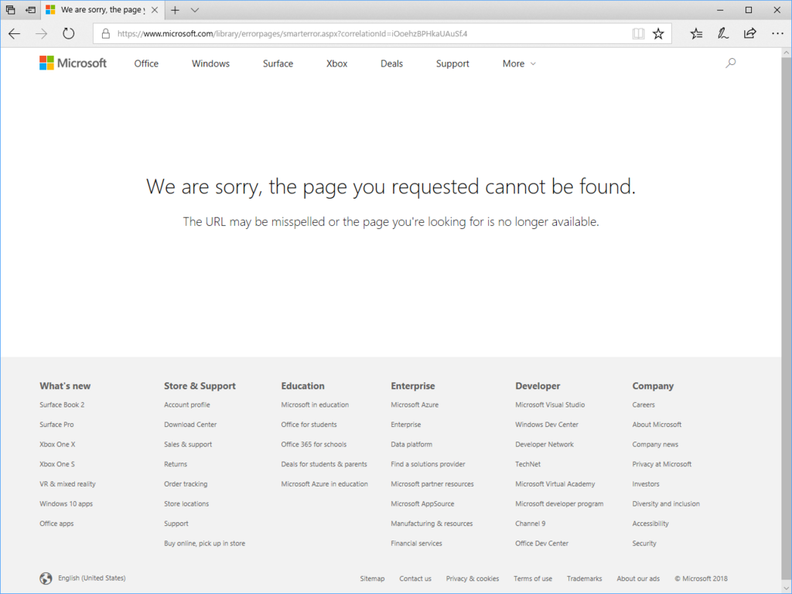

日記：わいのストアからアプリが消えた
公開日：
先週まで少し忙しくて、最近また生活リズムがくるってしまった。完全に昼夜が逆転してしまい、
- 夕ご飯食べてすぐ寝てしまう（午後7時～8時）
- 日付が変わった頃に起きる
- 朝方（5時から～9時ぐらい）に寝る
- 世間に合わせるため、昼前に頑張って起きる（ずっと眠い）
みたいな感じ。1日で約3時間～4時間を2回寝てる計算かな？ だったら睡眠時間はトータルで足りてるわけだけど、どうもすっきりしないな。
まぁ、無理して直そうとしても苦痛なだけだし、できる仕事は夜のうちに片づけて、昼はのんびり過ごしている。
――話は変わる。
昨日あたりに気づいたのだが、以前に作ってストアに登録していたアプリ「Sabun」が、何らかの理由で取り下げられてしまったようだ。

久しぶりにダッシュボードへログインしてレポートを読むと、「クラッシュするから直せ」みたいなことが書いてある。出したときはそこそこちゃんと動いていたんだが……ああいうのは一度ストアを通せばオッケーだと思っていたのだけど、あとから取り下げられることもあるんだなぁ。品質がダメなのは最初から分かっていたけど（半日もかけずに作った記憶ある）、あんまり直そうっていう気も起らないから、そのまま放置しておくつもり。
――はたまた話は変わるけど、最近の政治の話は難しい。文書の改ざんやらなんやら。もはや詳細を追おうという気すら失せるのだけど、個人的によくわかんないのがこの“改竄”（← とりあえず、ここではそういうことにしておく）問題の位置付けだ。
とある人によると、文書の改ざんは「民主主義の危機」であるという。まぁ、自分もいいことではないな、というか本当なら相当に重い処分が下ってしかるべきだと思うけど、これって「民主主義だけ」の危機ではないよな。王制だろうと、貴族共和制だろうと、共産党独裁だろうと、行政を官僚に頼っているなら、どの政治体制であろうと問題なわけだ。つまり、これはプリンシパル・エージェント問題の一種であって、別に民主主義がどうこうって話ではない気がする。確かに民主主義だって官僚制に依存はしているから、まったく関連がないわけではないけれど、「民主主義の危機」といった類の表現はザックリし過ぎていて、本当に問題のヤバさが分かっているのかと不安になる。
野党の立場からいえば、首相の恣意や首相への“忖度”（← いい加減、やめない？ こういう言葉使い）が今回の改竄事件を引き起こしたと言いたいのだろう。確かにそれならば「民主主義の危機」と言えなくはない。しかし、では野党が政権をとったとして、改竄事件は起こらなくなるのだろうか。個人的にはそうは思えないし、民主党政権時代を精査すれば、たぶんこの手の問題の一つや二つは発掘できるのではないだろうか。――だからと言って許せ、と言っているわけではない。与党によっても野党にとっても、官僚をきっちりコントロールできる＆権力者の個人的な思惑によって官僚が振り回されない体制作りというのは共通の課題であるはずだし、そういう視点を持っていただきたいわけ。なのに、前向きな改善案が野党の側から出てこないのはどういうことなのだろうか。
少し前だったかな、Twitter で
日本の下請けってモノを作るときに元請けの引いた図面をいい感じに修正してくれてスゴい。海外に発注したら間違った図面通りの製品がでてくる
みたいな話を聞いた気がするが（本当かどうかは知らないが、さもありなんとはお思う）、日本の官僚制なんかその最たるもので、政治家がテキトーに言ったふわっとしたことをカタチにして実行する能力は割とあるんじゃないかな。しょうもない問題を複雑な調整で解決してしまう能力も高いんじゃないだろうか。ただ、こうした能力（や、それを発揮するために与えられている有形無形の裁量）は悪い方向に向くと、今回の改竄のような問題を生みやすいのではないかと感じる。
そして、もう一つ問題に感じるのは、ツッコミを入れている野党側にも調査力なんかまったくなくて、メディア、下手したら写真週刊誌レベルの炎上ソースに頼りっきりであるという点だ。何でもかんでも無批判に鵜呑みにして、メディアの手先かなにかなって感じ。
どっちにしろ、政党にもっと官僚的な・実務的なチカラを持たせる方法＋政治家の意向で官僚のキャリアパスが左右されない仕組みを考えないと、この泥沼から脱せられないなぁ、と感じる（イメージ的には官僚組織の下の方は政治家はノータッチ、上の方だけ猟官制にする感じ。天下りするぐらいなら、お好みの政党に就職して実務してください、みたいな。あー、でもこれもいろいろ面倒なことになりそうやな。あと、実務能力のある上級官僚部隊を政党で抱えようと思ったら二大政党制っぽくなるんやろうな。3つも4つも作るのは正直無理やし）。政党にもっとお金が回って、自前の（別に外注でもいいけど）政策立案・調査のための部隊をもたせられたら……と思うけど、あいつらにお金やってもロクなことに使わんしなー……と、まぁ、堂々巡りなわけですよ。
政権が安定しているうちに難題を一つでも多く解決してほしいって思うけど、なかなかままなりませんな。このままでは、わしらの世代も「政治的・経済的負債ばっかり残しやがって」とあとの世代からディスられるだけの存在になるなｗ